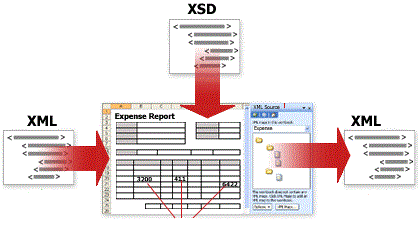

How can we export Excel to Office Open XML and import Office Open XML to Excel quickly and with sound quality? The answer is what most developers desire to know. This sample will represent how to transform Excel to Office Open XML and vice versa using free Spire.XLS for .NET.
Free Spire.XLS for .NET is a professional .NET Excel component which enables developers to fast export Excel to Office Open XML or import Office Open XML to Excel. The whole process of exporting Excel to Office Open XML in C#, VB.NET can be described as 3 simple steps:
On the contrary, while importing XML file to Excel, you can achieve this by another 3 steps:
This method features:

Free Spire.XLS for .NET is a standalone Excel .NET library and does not depend on Microsoft Office Excel. It supports both for the old Excel 97-2003 format (.xls) and for the new Excel 2007 and Excel 2010 (.xlsx, .xlsm).
Main Functions
Related links
Website: http://www.e-iceblue.com/
Product Home: Free Spire.XLS for .NET
Download:
Free Spire.XLS Download
Live Demo:
Spire.XLS Demos
Forum:
Free Spire.XLS Forum